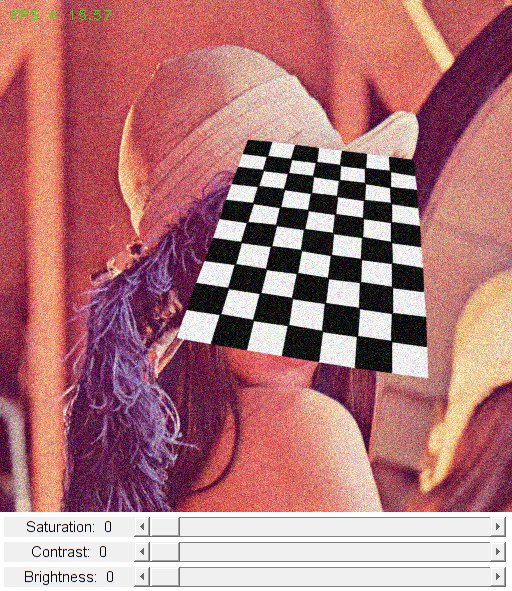

Video Capture
We learn how to capture live stream from camera and display it, while adjusting basic video color properties.
Sources:
function varargout = capture_demo_gui() % create the UI h = buildGUI(); if nargout > 0, varargout{1} = h; end % main loop counter = 0; tID = tic(); while ishghandle(h.fig) % get frame-by-frame frame = h.cap.read(); if isempty(frame), break; end % FPS counter = counter + 1; frame = cv.putText(frame, sprintf('FPS = %.2f', counter/toc(tID)), ... [10 20], 'FontFace','HersheyPlain', 'Color',[0 255 0]); % display set(h.img, 'CData',frame); drawnow; end end function onType(~,e,h) %ONTYPE Event handler for key press on figure % handle keys switch e.Key case {'q', 'escape'} close(h.fig); case {'c', 's', 'space', 'enter'} frame = h.cap.retrieve(); filename = sprintf('capture_%s.jpg', datestr(now(),'yyyymmddTHHMMSS')); cv.imwrite(filename, frame); disp(['Saved ' filename]); end end function onChange(~,~,h) %ONCHANGE Event handler for UI controls % retrieve current values from UI controls % and update corresponding properties h.cap.set('Brightness', round(get(h.slid(1), 'Value'))); h.cap.set('Contrast', round(get(h.slid(2), 'Value'))); h.cap.set('Saturation', round(get(h.slid(3), 'Value'))); % update UI set(h.txt(1), 'String',sprintf('Brightness: %2d',h.cap.get('Brightness'))); set(h.txt(2), 'String',sprintf('Contrast: %2d', h.cap.get('Contrast'))); set(h.txt(3), 'String',sprintf('Saturation: %2d',h.cap.get('Saturation'))); drawnow; end function h = buildGUI() %BUILDGUI Creates the UI % setup video capture %cap = cv.VideoCapture(0, 'API','Any'); cap = createVideoCapture([], 'chess'); pause(1); assert(cap.isOpened()); % video settings frame = cap.read(); assert(~isempty(frame)); sz = size(frame); fourcc = char(typecast(int32(cap.get('FourCC')), 'uint8')); % build the user interface (no resizing to keep it simple) h = struct(); h.cap = cap; h.fig = figure('Name',sprintf('Video Capture: %dx%d %s', sz(2), sz(1), fourcc), ... 'NumberTitle','off', 'Menubar','none', 'Resize','off', ... 'Position',[200 200 sz(2) sz(1)+80-1]); if ~mexopencv.isOctave() %HACK: not implemented in Octave movegui(h.fig, 'center'); end h.ax = axes('Parent',h.fig, 'Units','pixels', 'Position',[1 80 sz(2) sz(1)]); if ~mexopencv.isOctave() h.img = imshow(frame, 'Parent',h.ax); else %HACK: https://savannah.gnu.org/bugs/index.php?45473 axes(h.ax); h.img = imshow(frame); end h.txt(1) = uicontrol('Parent',h.fig, 'Style','text', ... 'Position',[5 5 130 20], 'FontSize',11, ... 'String',sprintf('Brightness: %2d',cap.get('Brightness'))); h.txt(2) = uicontrol('Parent',h.fig, 'Style','text', ... 'Position',[5 30 130 20], 'FontSize',11, ... 'String',sprintf('Contrast: %2d',cap.get('Contrast'))); h.txt(3) = uicontrol('Parent',h.fig, 'Style','text', ... 'Position',[5 55 130 20], 'FontSize',11, ... 'String',sprintf('Saturation: %2d',cap.get('Saturation'))); h.slid(1) = uicontrol('Parent',h.fig, 'Style','slider', ... 'Position',[135 5 sz(2)-135-5 20], 'Value',cap.get('Brightness'), ... 'Min',0, 'Max',100, 'SliderStep',[1 10]./(100-0)); h.slid(2) = uicontrol('Parent',h.fig, 'Style','slider', ... 'Position',[135 30 sz(2)-135-5 20], 'Value',cap.get('Contrast'), ... 'Min',0, 'Max',100, 'SliderStep',[1 10]./(100-0)); h.slid(3) = uicontrol('Parent',h.fig, 'Style','slider', ... 'Position',[135 55 sz(2)-135-5 20], 'Value',cap.get('Saturation'), ... 'Min',0, 'Max',100, 'SliderStep',[1 10]./(100-0)); % hook event handlers opts = {'Interruptible','off', 'BusyAction','cancel'}; set(h.slid, 'Callback',{@onChange,h}, opts{:}); set(h.fig, 'WindowKeyPressFcn',{@onType,h}, opts{:}); end